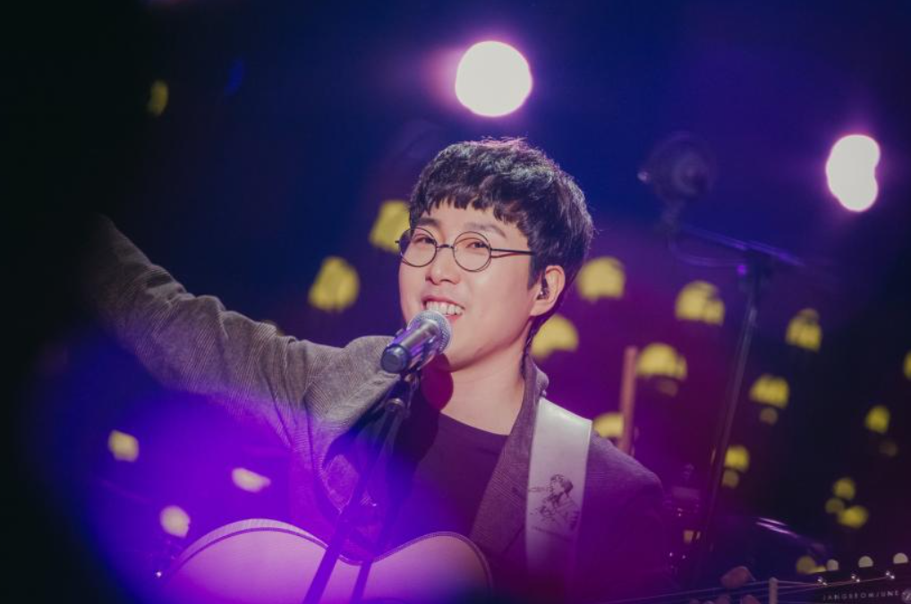

- 장범준은?
- 장범준의 노래?
- 장범준의 가족?

장범준
장범준은 대한민국의 가수, 싱어송라이터. 버스커 버스커의 리더이자, 보컬을 맡고 있다. 대부분 곡의 작사, 작곡을 담당한다. 대한민국 가요계 최고의 싱어송라이터 중 한 명이다.
버스커 버스커 1집은 이미 대중가요사에 남을만한 명반으로 평가받고 있고, 특히 벚꽃 엔딩은 봄이라는 한 계절을 상징하는 명곡이 되었다.
이적은 장범준에게 '청춘이라는 단어가 어울리는 가수고, 청춘이라는 단어 속에 봄이 들어 있듯이 우리의 봄의 사도이다.'라고 평해 주었다.
후크송이나 고음을 사용하여 긁는 일반적인 히트곡의 공식을 전혀 따르지 않고 장범준 특유의 잔잔하고 담담하게 부르는 보컬로 대중에게 크게 어필하고 있다.
또한 일반적인 남자 음역대보다는 조금 낮은 음역대를 가지고 있으며 본인도 벚꽃엔딩과 첫사랑 등은 공연 등에서 부를 일이 있으면 반음 내려서 부른다고 한다.
음악 전공을 하지 않았기 때문에 악보를 쓸 줄 모른다. 주변의 도움을 받거나 조금씩 배우는 듯하다.
영화 '다시, 벚꽃'에서 녹음을 위해 첼로 연주자와 함께하는 장면이 나오는데, 계이름으로 대화하는 것에 힘들어하는 모습을 보인다.
기타 연주 실력이 뛰어나다.
솔로 활동을 하면서 더 발전하였다.
기타뿐만 아니라 베이스, 드럼도 연주할 수 있다. 같은 그룹 멤버 김형태에게 베이스를 가르쳐준 것도 장범준이다.
관객 호응에 굉장히 민감하다. 공연에 들어가면 마이크가 잘 들리는지 두세번 관객들에게 확인한다.
호응 유도를 위해 '다같이~'와 '뛰어!'를 자주 외친다. 호응이 별로 없으면 재미없는 줄 알고 소극적으로 변한다.